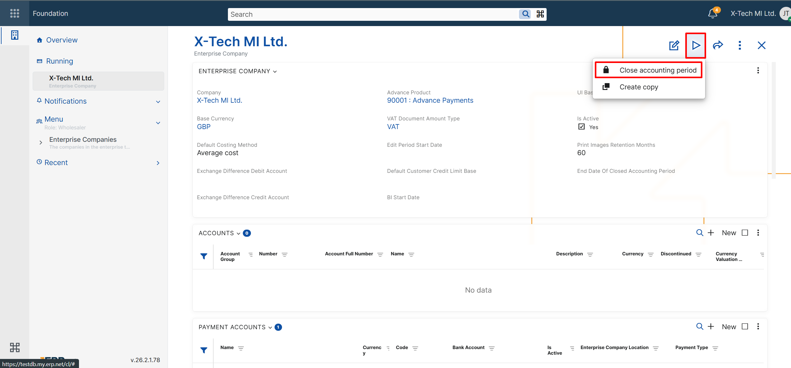
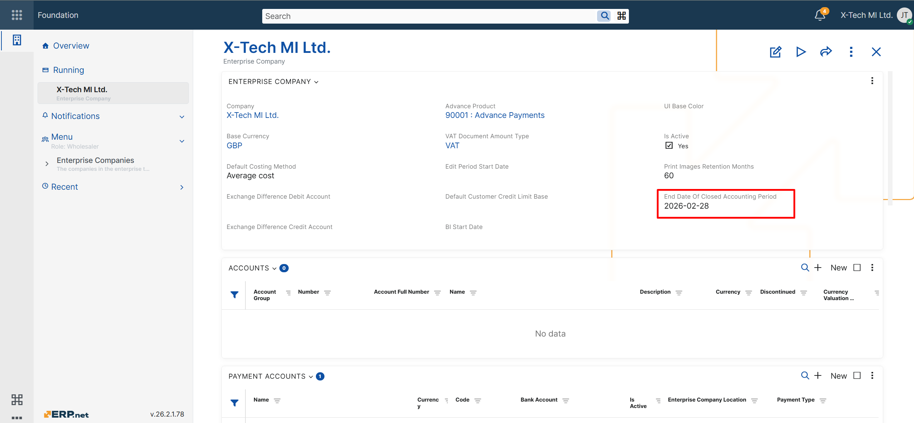

Close accounting period
Overview
The Close accounting period UI function is available for Enterprise Companies in both the Web Client and the Desktop Client.
It is used to close accounting vouchers in a controlled, period-by-period manner. When the function is executed, all eligible accounting vouchers for the selected enterprise company are set to state Closed, and the End Date Of Closed Accounting Period field is updated.
The function is designed to support sequential month-by-month closing and to reduce the risk of accidental closing to an arbitrary future date.
Getting started
To use the function, open the definition of the required Enterprise Company and run Close accounting period.

After confirmation, the system:
- determines the next valid closing date;
- finds all eligible accounting vouchers for the selected enterprise company;
- changes their state to Closed;
- updates End Date Of Closed Accounting Period field with the determined closing date.
If no eligible accounting vouchers are found for the period, the function still updates End Date Of Closed Accounting Period.

Concepts
What "close accounting period" means
In the context of this function, closing an accounting period means changing the state of eligible accounting vouchers from Released or Completed to Closed for the selected enterprise company.
This operation does not rely on manual date entry. Instead, the system determines the next allowed closing date automatically as follows:
- If End Date Of Closed Accounting Period is empty, the suggested date is the last day of the previous calendar month.
- If End Date Of Closed Accounting Period already has a value, the suggested date is the last day of the next calendar month after the last closed period, but not later than the last day of the previous month relative to the current date.
Eligible accounting vouchers
In the current implementation, an accounting voucher is closed only if all of the following conditions are met:
- it belongs to the selected enterprise company;
- its Document Date is on or after 2026-01-01;
- its Release Time falls after the last closed date and within the newly determined closing period;
- its state is Released or Completed;
- it is not voided
Only vouchers that meet all of these conditions are changed to state Closed.
Closed-period end date
The function always updates End Date Of Closed Accounting Period field with the determined closing date, even if no eligible accounting vouchers are found.
This allows the closed accounting period to continue advancing consistently, month by month.
Period-by-period closing
The function is intended for controlled, sequential closing of accounting periods.
By automatically suggesting the next valid closing date, the system prevents users from closing an arbitrary future period and enforces a predictable closing sequence.